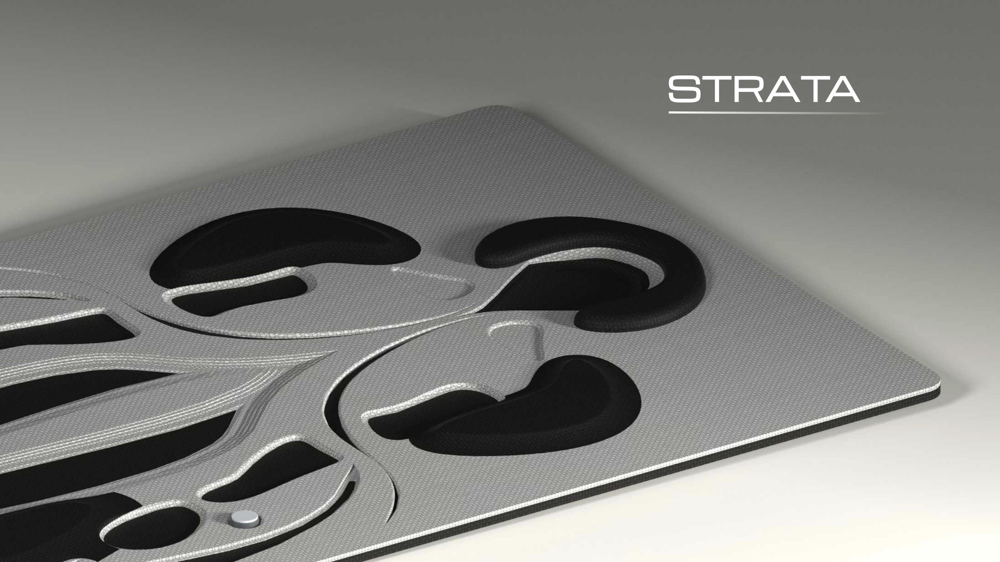

The thinking mat. You lie down, it reads your body, and four zones adjust under your head, neck, upper back and lower back so you can actually rest.A surface that works while you rest.
01
Screen days keep getting longer, and no product has been designed to give the body the recovery time it no longer gets.
I designed for Priya, 31, a remote knowledge worker who works ten hours a day from her apartment floor, with chronic lower back and neck pain and no ergonomic setup.
02
I started wide with sticky notes, then shaped ridges and valleys by hand in clay, drawing small figures on the models to see how a body would rest on each one.
Then I layered memory foam and wool felt to feel how soft and firm should meet.
03
Each zone answers one place where screen posture blocks recovery. A round dome offloads the head, a saddle channel keeps the neck’s curve, bilateral ridges support the upper back so the spine never touches, and a raised dome fills the gap under the lower back.
04
Luxury car seats have used inflating lumbar bladders since 2003. Strata takes that idea, makes it automatic, full-body and floor-based.
Twelve pressure zones read the body every 200 ms, a smartwatch adds heart-rate variability, and an ESP32 decides each zone’s firmness. A dial lets you override it.
05
A knit skin, a 3D-printed TPU lattice that is dense under ridges and open under valleys, EVA foam inserts, a printed sensor grid, the microcontroller and a silicone base.
Manufacturing $84–120 a unit, retail $299–349: the price of a massage gun, less than a chair.
06
It lies on the floor like a rug, in three colourways, and asks nothing of you but to lie down.